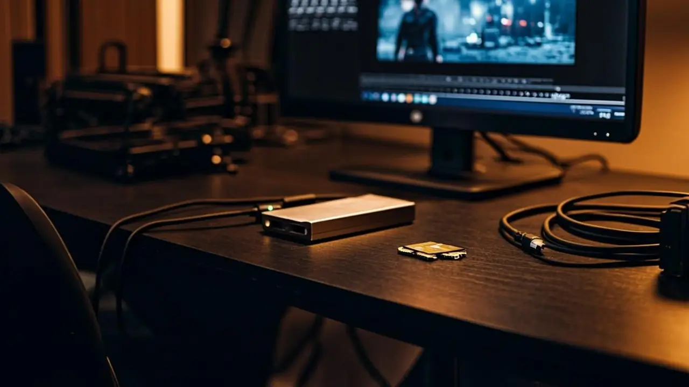
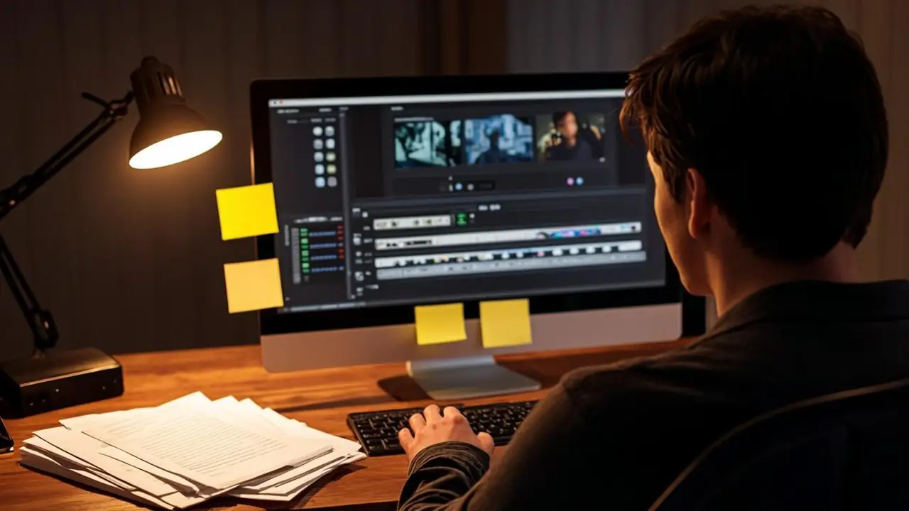
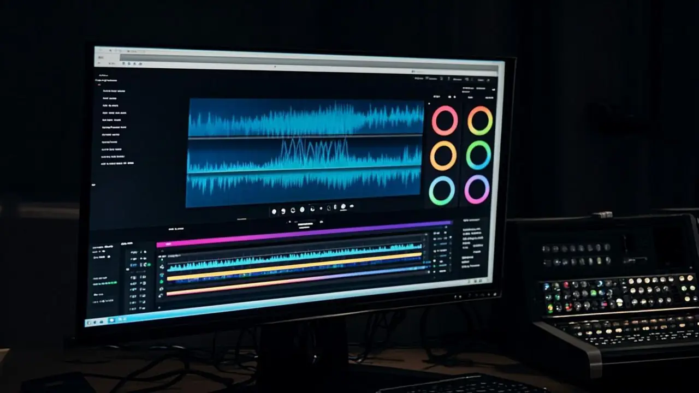
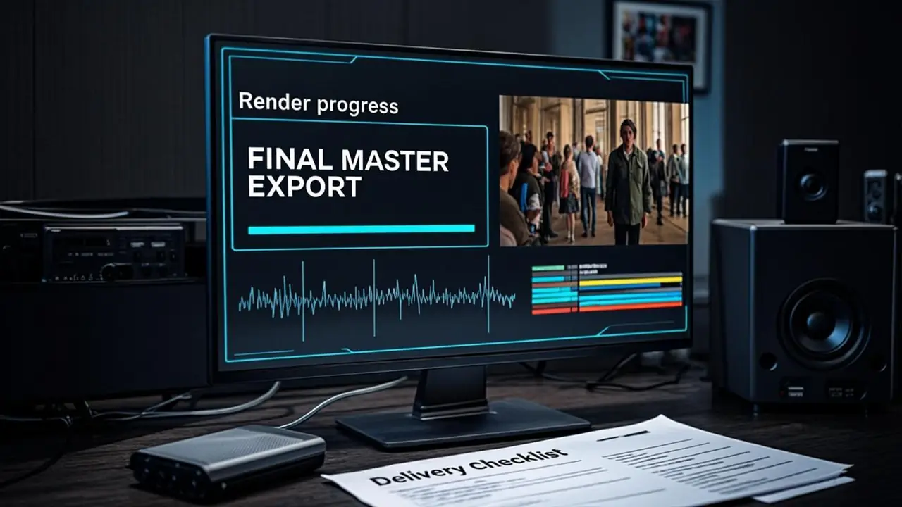

.webp)

Монтаж видео
Сборка ролика из вашего материала: отбор, ритм, цвет и звук.
от 7 500 ₽ / 5 мин01EDITING / POST / ТОМСК / СЕВЕРСК
Соберем ролик из ваших материалов: отбор, ритм, цвет, звук и графика — в один мастер-файл под площадки.
Выберите задачу — соберём смету под ваш материал.
Сборка ролика из вашего материала: отбор, ритм, цвет и звук.
от 7 500 ₽ / 5 минКлиповая подача: быстрая склейка, акценты и темп под музыку.
от 12 425 ₽ / 5 минВертикальные ролики из длинного материала: хук, титры, темп.
от 1 500 ₽ / роликЦветокоррекция, чистка и выравнивание звука — входят в любой пакет.
входит / в пакетыПлашки, моушен-дизайн, инфографика и субтитры под стиль ролика.
от 5 000 ₽16:9, 9:16 и 1:1: версии под сайт, соцсети и рекламу.
входит / в пакетыНе каждый кадр снят оператором — и это нормально. Мы умеем собирать сильные ролики из мобильного материала, архивных съемок и разнородных кусочков. Главное — драматургия, ритм и честный постпродакшн, а не обещания «дотянем в финале как-нибудь».
Пересматриваем весь материал и выбираем то, что работает на задачу, а не то, что жалко удалить.
Собираем историю: темп, паузы и акценты — по смыслу, а не по порядку съемки.
Цветокор, чистка звука, субтитры и плашки собираются в один мастер-файл.
16:9, 9:16 и 1:1 с обложками: ролик готов к публикации там, где нужно.
От приемки материала до мастера — четыре шага. Смету считаем до старта, правки — по договоренности.
Шаг 01 LIVE

[SYNC]FILESСматриваем исходники, обсуждаем задачу и фиксируем смету.
Шаг 02

SELECTSTORYПересматриваем материал и собираем структуру ролика.
Шаг 03

EDITCOLORМонтаж, цветокор, чистка звука и графика.
Шаг 04

MASTER16:9Мастер-файл под площадки плюс круги правок по договоренности.
Постпродакшн в деле: цвет, ритм и звук, которые собирают материал в историю. Открывайте фрагмент и смотрите сборку.
Выберите тип и уточните объем. Калькулятор покажет ориентир: чем длиннее ролик, тем ниже цена за минуту.
Монтаж — от 1 500 ₽ за минуту в базовом темпе, динамичный — от 3 500 ₽. На объеме цена за минуту падает: базовый до −25%, динамичный до −50%. Монтаж reels — от 1 500 ₽ за ролик, паки со скидкой до −30%. Цвет, чистка звука и субтитры входят в стоимость.
Базовый темп — от 1 500 ₽ за минуту, динамичный — от 3 500 ₽. Чем длиннее ролик, тем ниже цена за минуту: до −25% и −50% на объеме. Итог фиксируем после просмотра материала.
Нормально. Умеем собирать сильные ролики из мобильного материала: отбор, ритм, цвет и звук вытягивают картинку. Главное — снять без сильного пережатия.
Любые форматы: mp4, mov, ссылки на облако или диск. Если есть исходники без пережатия — присылайте их: из них получится лучшая картинка.
Один круг правок входит в базовый монтаж. Дополнительный круг — 15% от стоимости. До старта фиксируем структуру, чтобы править детали, а не концепцию.
Ролик до 5 минут — 2–4 рабочих дня после получения материала. Длинные проекты — 5–7 дней. Срочный монтаж — +30%, если есть окно в таймлайне.
Мастер-файл под площадки: 16:9, 9:16 и 1:1 по запросу, обложки-превью. Исходники проекта монтажа передаем бесплатно.
Да: чистка шума, выравнивание громкости и саунд-дизайн входят в стоимость монтажа. Дикторская озвучка — от 3 500 ₽ как отдельная задача.
Работаем по договору: доступ к материалам только у монтажера, после сдачи и закрытия проекта копии удаляем. По запросу подпишем NDA.
Есть материал, который должен стать роликом, а не папкой на диске. Пишите в удобный канал: быстро разберем задачу, сроки и следующий шаг.
Telegram - самый быстрый способ прислать ссылку на материал.
VK подойдет для первого касания, референсов и просмотра контекста.
Почта - для брифов, документов и спокойной переписки: hehpeppewhata@duck.com.


.webp)
.webp)
.webp)
.webp)
.webp)
.webp)